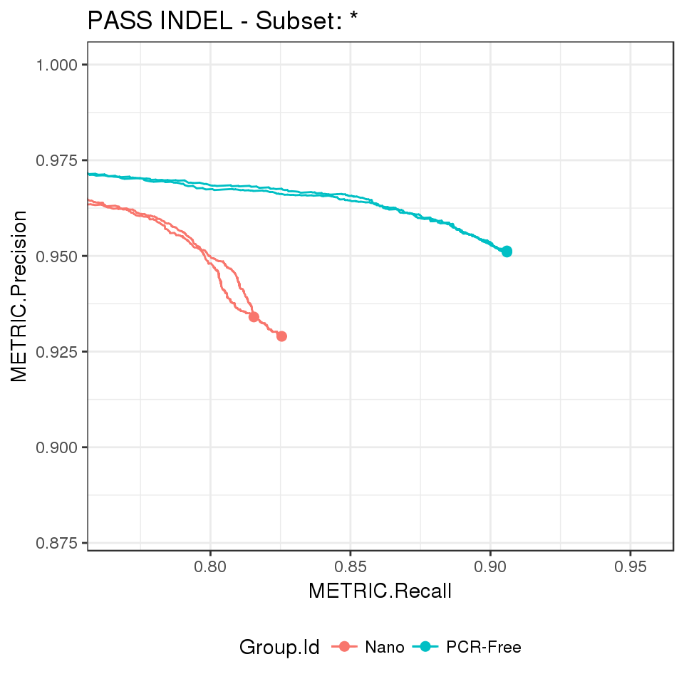
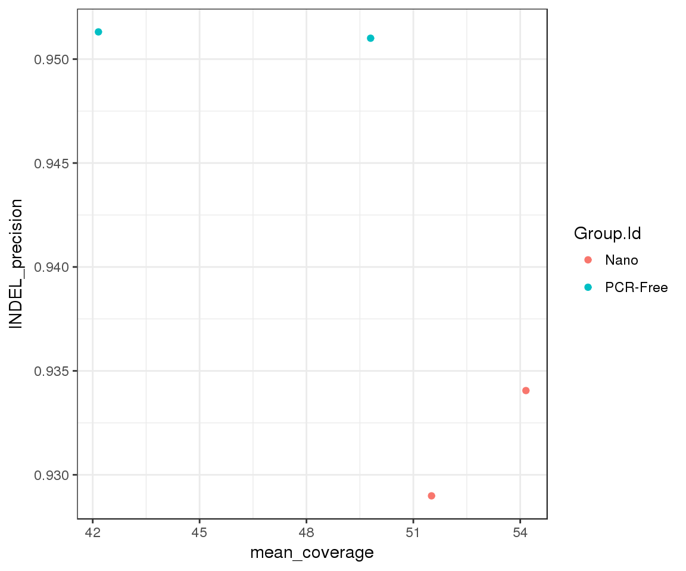
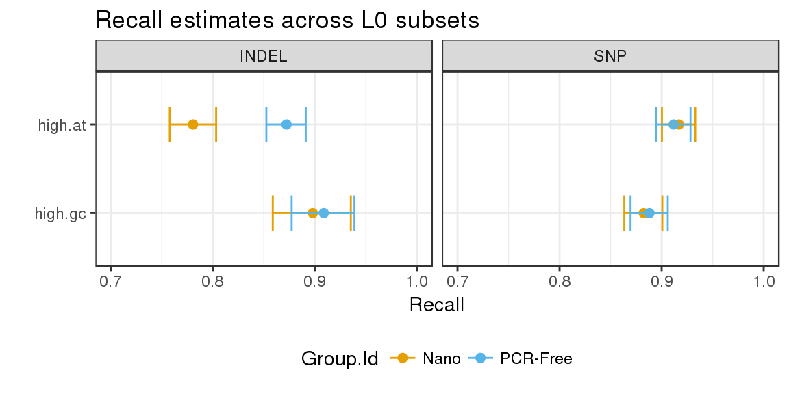

Loading demo data from a happyCompare samplesheet creates a happy_compare object:
samplesheet_path <- "vignettes/pcrfree_vs_nano.subset.csv"
happy_compare <- read_samplesheet(samplesheet_path, lazy = TRUE)That contains the following fields:
samplesheet: the original samplesheethappy_results: a list of happy_result objects as defined in happyR
build_metrics: a list of data.frames with custom metricsids: a vector of build idssapply(happy_compare, class)
## $samplesheet
## [1] "tbl_df" "tbl" "data.frame"
##
## $happy_results
## [1] "happy_result_list" "list"
##
## $build_metrics
## [1] "build_metrics_list" "list"
##
## $ids
## [1] "character"hap.py results and samplesheet metadata can be accessed with extract_metrics(), leaving them ready for downstream analysis:
e <- extract_metrics(happy_compare, table = "summary")
class(e)
## [1] "happy_summary" "tbl_df" "tbl" "data.frame"# extract performance metrics and tabulate mean plus/minus SD per group and variant type
extract_metrics(happy_compare, table = "summary") %>%
filter(Filter == "PASS") %>%
hc_summarise_metrics(df = ., group_cols = c("Group.Id", "Type")) %>%
knitr::kable()| Group.Id | Type | METRIC.F1_Score | METRIC.Frac_NA | METRIC.Precision | METRIC.Recall |
|---|---|---|---|---|---|
| Nano | INDEL | 0.8725 ± 0.0024 | 0.3428 ± 0.0078 | 0.9315 ± 0.0036 | 0.8205 ± 0.007 |
| Nano | SNP | 0.9707 ± 2e-04 | 0.1425 ± 0.0016 | 0.9963 ± 4e-04 | 0.9465 ± 1e-04 |
| PCR-Free | INDEL | 0.928 ± 1e-04 | 0.3931 ± 0.0018 | 0.9512 ± 2e-04 | 0.9059 ± 1e-04 |
| PCR-Free | SNP | 0.9697 ± 4e-04 | 0.1325 ± 0.0016 | 0.9968 ± 1e-04 | 0.9441 ± 8e-04 |
# extract ROC metrics and plot a precision-recall curves, e.g. for PASS INDEL
extract_metrics(happy_compare, table = "pr.indel.pass") %>%
hc_plot_roc(happy_roc = ., type = "INDEL", filter = "PASS")
# link build metrics to hap.py results
summary <- extract_metrics(happy_compare, table = "summary")
build_metrics <- extract_metrics(happy_compare, table = "build.metrics")
merged_df <- summary %>%
inner_join(build_metrics)## Joining, by = c("Group.Id", "Sample.Id", "Replicate.Id", "happy_prefix", "build_metrics")merged_df %>%
filter(Type == "INDEL", Filter == "PASS") %>%
ggplot(aes(x = mean_coverage, y = METRIC.Precision, group = Group.Id)) +
geom_point(aes(color = Group.Id)) +
ylab("INDEL_precision")
# extract stratified counts and visualise highest density intervals for recall in level 0 subsets
hdi <- extract_metrics(happy_compare, table = "extended") %>%
filter(Subtype == "*", Filter == "PASS", Subset.Level == 0,
Subset %in% c("high.at", "high.gc")) %>%
estimate_hdi(successes_col = "TRUTH.TP", totals_col = "TRUTH.TOTAL",
group_cols = c("Group.Id", "Subset", "Type"), aggregate_only = FALSE)
hdi %>%
mutate(Subset = factor(Subset, levels = rev(unique(Subset)))) %>%
filter(replicate_id == ".aggregate") %>%
ggplot(aes(x = estimated_p, y = Subset, group = Subset)) +
geom_point(aes(color = Group.Id), size = 2) +
geom_errorbarh(aes(xmin = lower, xmax = upper, color = Group.Id), height = 0.4) +
facet_grid(. ~ Type) +
scale_colour_manual(values = c("#E69F00", "#56B4E9")) +
theme(legend.position = "bottom") +
ggtitle("Recall estimates across L0 subsets") +
xlab("Recall") +
ylab("") +
xlim(0.7, 1)